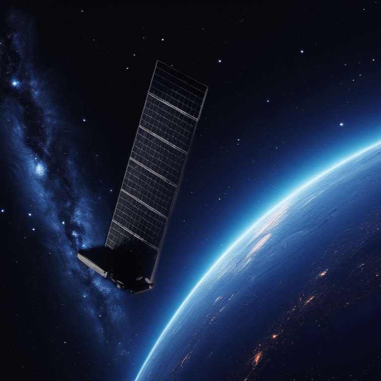

Imagine having access to high-speed internet from anywhere in the world, regardless of your location. This is now a reality thanks to Starlink, a satellite internet constellation developed by SpaceX. In this article, we will explore the features, benefits, and impact of Starlink on the way we access the internet.
What is Starlink?
Starlink is a satellite internet network consisting of over 6,000 small satellites in low Earth orbit (LEO). These satellites communicate with designated ground transceivers to provide internet access to users. Starlink aims to provide global mobile broadband coverage, with a focus on underserved communities.
Features of Starlink
- High-speed internet: Starlink offers speeds of up to 150 Mbit/s, with latency as low as 20 ms.
- Global coverage: Starlink provides internet access to users in remote and hard-to-reach areas.
- Mobile services: Starlink offers internet services for vehicles, vessels, and aircraft.
- Satellite cellular service: Starlink is partnering with T-Mobile US to provide satellite cellular service capability.
Benefits of Starlink
- Accessibility: Starlink provides internet access to underserved communities and remote areas.
- Reliability: Starlink offers a reliable internet connection, even in areas with poor infrastructure.
- Cost-effective: Starlink is a cost-effective solution for internet access in areas where traditional infrastructure is not available.
Impact of Starlink
- Bridging the digital divide: Starlink is helping to bridge the digital divide by providing internet access to underserved communities.
- Economic growth: Starlink is expected to contribute to economic growth in remote areas by providing access to online resources and opportunities.
- Military and government use: Starlink has been contracted by the United States Department of Defense for military use and is also used by government agencies.
Conclusion
Starlink is revolutionizing the way we access the internet. With its high-speed internet, global coverage, and mobile services, Starlink is providing opportunities for individuals and communities around the world. As the technology continues to evolve, we can expect even more exciting developments from Starlink.
Stay tuned as SpaceX continues to innovate and expand the capabilities of the Starlink network.